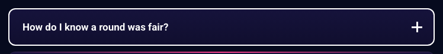
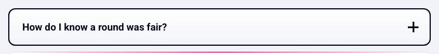
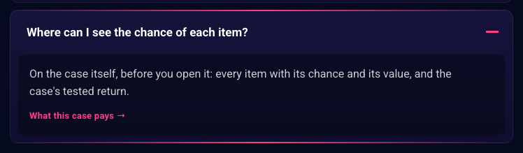
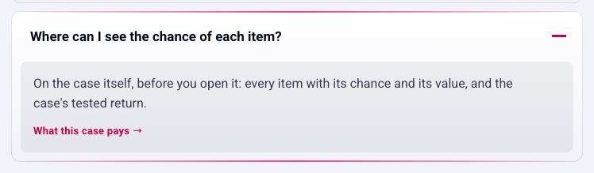

Disclosure
A question that opens its answer: one row, a plus that turns to a minus, and the pink edge when it is open. It is the native details, so it opens without a script. Everything on this page is drawn by design/system/components/disclosure.css through index.css, the same file a screen will load.
Anatomy
Where can I see the chance of each item?
On the case itself, before you open it: every item with its chance and its value, and the case's tested return.
What this case paysHow do I know a round was fair?
Every round has a proof you can check yourself, against the hash published before the round.
| Part | Class or element | What to change there |
|---|---|---|
| The row | .disclosure | the 12px corner, the row's fill (--bg-row) and its 1px edge |
| The question | summary | the question in 17px 700, a row of at least 64px; the whole row is the target |
| The mark | summary::after | a plus that turns half round into a minus as the answer opens, pink while open |
| The edges | ::before, ::after of the row | two pink hairlines that fade in at the top and bottom of an open row |
| The answer | .disclosure__body | the sunken plate (--bg-well) and the body ink at 16px; one paragraph |
| A link in it | .disclosure__body > .link | one onward link at the foot, a Text link with --arrow and --tap |
Variants and sizes
One form: no emphasis and no size to pick. The rules below are what stays the same, so a screen does not invent a second kind of question row. Heights are read from the rendered rows.
- Open is the product's own.
[open]on thedetails, set by the reader or by the page; never a class. While the product's script slides an answer shut the row carries.is-closingand already looks shut. - A group opens one at a time. Rows that share a
nameattribute close each other; the first one may start open. - Width is the layout. The row fills its container and never sets its own width; its height is the question's lines plus the answer.
- The answer holds one paragraph and at most one link. More than that is a page, and the row links to it.
| Row | Closed | Open, one paragraph | Open, with a link |
|---|---|---|---|
| Disclosure | How is it counted?Counted since launch. |
How is it counted?Counted since launch. What this case pays |
When to use
A disclosure holds the questions a person asks before they trust the place: where the chance of an item is, how a round is checked, what happens to a win. The answer is short and the row stays a question in the reader's own words (voice: a straight answer from someone on the scene). It is the one place where the product may fold text, so what is folded must be an explanation, never the price: odds, cost and expected value stand open wherever money is about to be spent (design principle 3), and a disclosure only leads to them with its link.
Rule and anti-rule
Use it
Home's "Questions and answers": a stack of rows in one group, each with a paragraph and one onward link ("What this case pays"). The footer's questions are the same row.
Take another component
A row that only goes somewhere is a Text link. An act (open, sell, sign in) is a Button. A fact that must be read before spending, the chance or the cost, is Prose or a Key-value line left open. Choosing one of a few is a Segmented control or Tabs.
States
Live at rest, on this page's theme: press the row, reach it with Tab. Open is the product's own state, the [open] attribute.
How do I know a round was fair?
Every round has a proof you can check yourself, against the hash published before the round.
Where can I see the chance of each item?
On the case itself, before you open it: every item with its chance and its value, and the case's tested return.
What this case paysSnapshots of the same instances, dark on the left and light on the right, taken with reduced motion so each shows the face the state settles on.


--line-focus

--line-pink-fade, --text-link, --bg-well, --text-body- No hover and no press. kit.css draws neither on the row, so none is shot: the row answers the pointer with the cursor alone, and the 64px row is the target. Whether a row should light under the pointer is a question for the founder (
--bg-hoverexists); until it is answered the stand shows what the product draws. - No disabled look. A question that cannot open is not drawn; the page leaves it out (D-58).
node design/kit/tools/shoot-states.js http://localhost:8765/ disclosure # re-shoot after a change to disclosure.css or its tokens node design/kit/tools/shoot-states.js http://localhost:8765/ disclosure --check # step 9: fails if a snapshot drifted
In the code
| Token | Kind | Dark | Light |
|---|
Read live from tokens.css. Every part found a semantic role, so no colour primitive is read and no component token was needed. Geometry and type come from the primitives (--size-row, --size-mark, --size-lead, --radius-card, --space-*), the motion from --motion-ease-disclosure. The slide of the answer is the product's script (motion.js); without it the row opens at once.
File: design/system/components/disclosure.css, loaded by design/system/index.css in the atoms' group.
<details class="disclosure" name="faq" open>
<summary>Where can I see the chance of each item?</summary>
<div class="disclosure__body">
<p>On the case itself, before you open it ...</p>
<a class="link link--arrow link--tap" href="...">What this case pays</a>
</div>
</details>
Stands on: Home, Deposit, Provably fair. Until step 8 those screens still read kit.css; step 6 moves their markup onto this file's forms by the rename map.